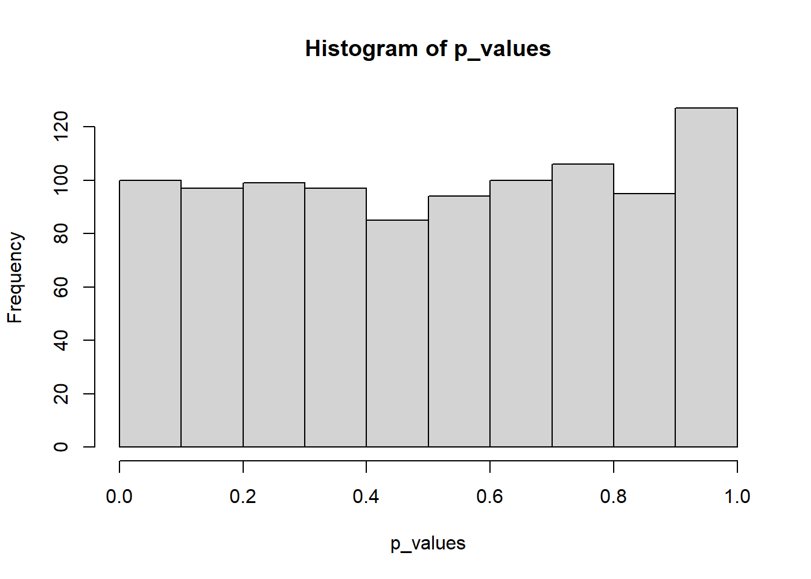

# Paramètres
alpha <- 0.05
simulations <- 1000
# Modele linéaire Y ~ X indépendants
modele <- function(n = 50) {
# Données
Y <- runif(n)
X <- runif(n)
# Estimation du modèle
the_lm <- lm(Y ~ X)
# Statistique F
f_lm <- summary(the_lm)$fstatistic
# p-value
p_value <- pf(f_lm[1], f_lm[2], f_lm[3], lower.tail = FALSE)
# Retour: p-value, données et estimation du modèle
list(p_value = p_value, X = X, Y = Y, lm = the_lm)
}p-hacking
Objectif
Répéter 20 fois un test avec 5 % de risque permet d’obtenir un résultat significatif : c’est la définition du risque de type I. Le p-hacking consiste à répéter des expériences jusqu’à obtenir un résultat.
L’exemple suivant consiste à tirer des points uniformément dans une fenêtre carrée de côté 1 puis de chercher une corrélation entre leurs coordonnées en estimant le modèle linéaire \(Y = aX + B + \Epsilon\). Si le statistique F du modèle dépasse sa valeur critique au seuil de risque de 5%, la corrélation est validée.
Par construction, \(Y\) est indépendant de \(X\) mais le test en positif dans 5 % des cas.
Simulations
Résultat
Histogramme des p-values de la statistique F :
# Simulations: exécution répétée du modèle
test <- replicate(simulations, modele(), simplify=FALSE)
# Extraction des p-values de la liste dans un vecteur
p_values <- sapply(seq_along(test), function(i) test[[i]]$p_value)
# Histogramme de p-values
hist(p_values)
Le nombre de simulations significatives est 52, proche de la valeur théorique 50.